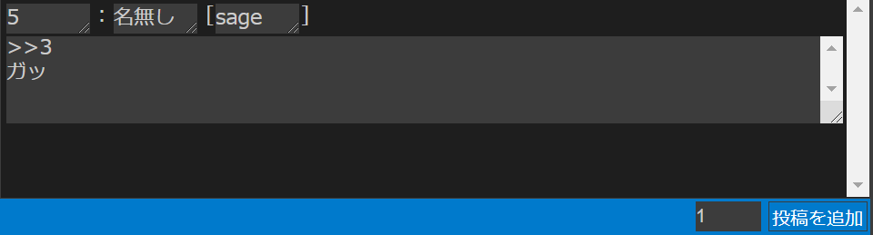

3. テンプレートについて
テンプレートは、Anygetでの作業において使用される投稿の雛型です。
作業の流れのページではあらかじめ用意されたプリテンプレートを使用しましたが、この章ではより詳細な解説を行います。
3.1 テンプレートとは？
掲示板小説は、基本的に特定の雛型の連続という事ができます。 例えば、このような小説を考えます。
1：名無し [sage]
こんにちは
2：とおりすがり [sage]
さようなら
3：名無し []
ぬるぽ
4：名無し [sage]
>>3
ガッ
まず、この小説を分割してみましょう。
1：名無し [sage]
こんにちは
2：とおりすがり [sage]
さようなら
3：名無し []
ぬるぽ
4：名無し [sage]
>>3
ガッ
すると、このように分けることが可能です。
こうして分かれた投稿を見てみれば、どれもある種の規則性に沿っている事が分かります。つまり、
- 下に行くにつれ増えていき、
>>でアンカーを付けられている「番号」 - 人によって違う場合もある「名前」
- 空欄だったり
sageだったりするメール欄 - 行頭が字下げされている「本文」
……といった「変化しうる」存在と、
：[]
……のような変化しない存在が組み合わさって、一つの投稿を作り出しているのです。
Anygetでは、前者を変数、後者を字の文と呼びます。
3.2 テンプレートを設定する
Anygetでは、「テンプレートを設定」パネル上部のテキストボックスにテンプレート記法でテンプレートを入力して「変更」ボタンをクリックすることでテンプレートを設定可能です。
テンプレートを設定すると、メインパネル「レスの追加」モードの入力フォームが変化し、テンプレートの内容に応じてテキストボックスが配置されます。
テンプレートは複数個設定でき、投稿単位で使い分けることもできます。
テンプレート記法
この部はチュートリアルなので、最低限のテンプレート記法について記します。より詳細な記述については、テンプレートリファレンスを参照してください。
前述の通り、テンプレートには変数と字の文がありますが、変数はさらに細分化することが可能です。この場合、一行変数と複数行変数です。一行変数は文字通り改行不能な変数で、複数行変数は改行可能な変数です。例えば複数行変数は「変数特定値メモ」パネルで利用できないとか、あるいは一行変数は字下げ出力設定が使えないとか言った風に、これらの間にはさまざまな違いがあります。
テンプレートの表記は、基本となる字の文の中で、宣言したい変数の名前を特定の記号で囲む形で行われます。一行変数の記号は$、複数行変数の記号は|です。つまり、例えば前述の小説のテンプレートは、
$番号$：$名前$ [$メール$]
|本文|
という内容になっています。
また、そのテンプレートを設定したことによって、「レスの追加」モードの入力フォームは、

……というような配置に編集されています。
ラベル
チュートリアルでは省略しますが、変数と字の文の他にラベルという概念も存在します。
詳しくは、テンプレートリファレンスを参照してください。
3.3 変数の詳細設定を行う
変数は、ある程度のカスタマイズを必要とする場合があります。
例えば先ほどの例で言うなら$番号$変数について考えてみましょう。まず並び替えの影響を受けない必要があります、つまり、「変数の詳細設定」パネルから「固定する」をオンにしなければいけません。それによって、他の変数は並び替えられても、番号は一貫して固定されたままの状態が作れます。
 また、投稿を追加するたびに1ずつ増加すると便利です。掲示板における投稿番号というのは大体の場合連番なので、自動増加は手間を省いてくれるはずです。これを実現するためには「増加幅」に
また、投稿を追加するたびに1ずつ増加すると便利です。掲示板における投稿番号というのは大体の場合連番なので、自動増加は手間を省いてくれるはずです。これを実現するためには「増加幅」に1を設定します。

このように、変数1つ1つに別々の設定を行いたい場合は、変数の詳細設定を行うことで実現できます。